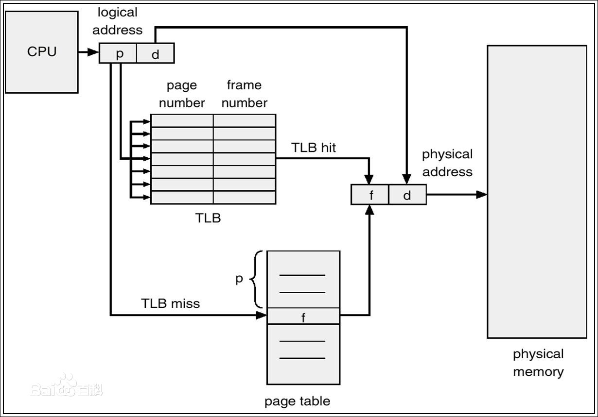
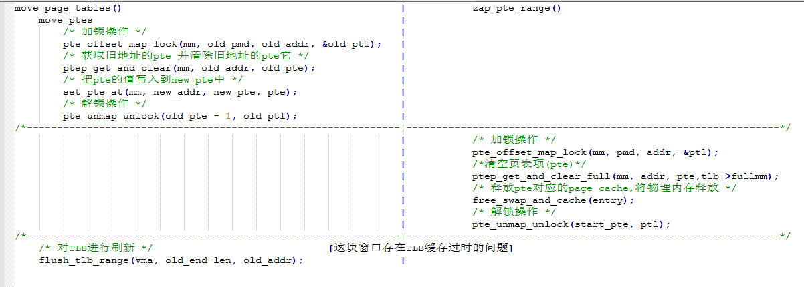
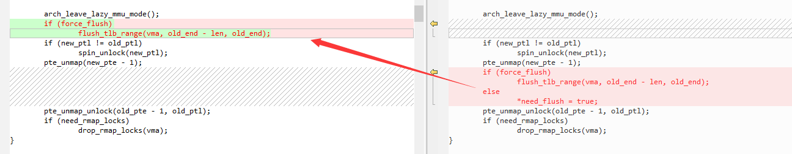

CVE-2018-18281
背景
页表(PT)和页表项(PTE)
页表（PT）：包含有关虚拟地址如何映射到物理地址的信息。
页表项（PTE）：页表中的条目我们称为页表项。
TLB基础概念
TLB（Translation lookaside buffer）旁路转换缓冲区或称为页表缓存，又称为快表，主要存放一些页表中的条目（也就是虚拟地址到物理地址的转换表）。由于页表存储在主存储器中，通过主存储器查询页表所付出的代价比较大，由此产生了TLB概念。
当处理器寻址时，不是直接在内存的物理地址中寻址，而是通过一组虚拟地址转换成主内存的物理地址进行寻址，我们常说的页表（PTE，page table页表存放在内存中）就是负责将虚拟地址翻译成实际物理地址的，TLB为了快速查找所以会缓存一些常用的PTE条目，而CPU则会优先查找TLB中的页表。
如果TLB中正好存在所需要的页表条目，则称为TLB命中（TLB Hit）；如果TLB没有所需的页表条目，则称为TLB失败（TLB Miss），如果命中，接下来CPU再次查看TLB表中对应的物理地址中的数据是不是已经在CPU的一级，二级缓存中了（一级缓存和二级缓存中的内容都是内存中访问频率较高的数据的映射，它们的存在都是为了减少高速CPU对慢速内存的访问，通常CPU找数据或指令的顺序是：先到一级缓存中再到二级缓存中，如果还是没有找到那么就去内存中找）。
如果不命中，则需要去内存中的页表中继续查找(转换)实际的物理地址，并将找到的PTE存到TLB中，覆盖TLB中不常用页表条目。

如果需要解除某个虚拟地址与物理地址之间的映射除了要对主存储器中相关的表项做删除操作以外还需要对TLB缓存中该映射关系做清除，一般叫做TLB刷新。
释放物理内存流程：
1.从页表中删除对应的条目，但继续保持对它所指向的物理页面的引用。
2.对可能使用了与当前线程相同页表的所有核心执行TLB刷新。
3.删除物理页面上保留的引用，释放它。
漏洞成因
漏洞描述
根据描述我们得知该漏洞的主要原因是因为mremap( )函数与ftruncate( )函数的底层函数存在条件竞争问题，导致一块物理内存的释放后重用。
这两个函数各自的作用？
首先我们来看下这两个函数各自的作用：
void mremap(void old_address, size_t old_size,size_t new_size, int flags, … / void new_address*/);：重新映射一块虚拟内存地址，更改虚拟地址与内存页面之间的映射关系。
int ftruncate(int fd, off_t length);：将文件截断为精准长度字节的大小。若先前的文件大于此时指定的大小，额外的数据则会被丢弃，若大于源文件大小则扩展填充为空字节(‘\0’)
漏洞原理
竞争点在哪？
以下列出具体的竞争函数调用链：
sys_mremap() -> mremap_to() -> move_vma() -> move_page_tables() -> move_ptes() -> 移动页表
sys_ftruncate() -> do_sys_ftruncate() -> do_truncate() -> notify_change() -> shmem_setattr() -> unmap_mapping_range()->unmap_mapping_range_tree() -> unmap_mapping_range_vma() -> zap_page_range_single() -> unmap_single_vma() -> unmap_page_range() -> zap_pud_range() -> zap_pmd_range() -> zap_pte_range()

pmd(Page Middle Directory)：页面中间目录，用来存放页表。
move_ptes( )函数首先获取旧地址的pmd锁，接着把旧地址的页表项(pte)设置给新地址的页表并清除掉旧地址的页表项，从而实现重映射的功能。最后解锁旧地址pmd，然后刷新TLB。
zap_pte_range( )函数的zap为zero all pages的缩写，作用是将pmd中从虚拟地址address开始，长度为size的内存块将其页表项(pte)清零并释放掉该空间的物理内存。
总结一下：
由于mremap函数内部对内存进行重映射(A地址指向的内存让B地址去指向)时的解锁时机把握不合适，导致在解锁之后 TLB刷新之前存在一个竞争窗口，这个时间段之内TLB缓存中保存的数据都属于过时的数据，虽然在解锁之前已经删除了源地址(A地址)在页表中对应物理地址的页表项(PTE)，但TLB中却还保留着一份备份。如果我们存在一个与地址A绑定的内存文件，并通过ftruncate函数去抢占窗口并触发释放前面的物理页面(把阶段大小设置为比源文件小即可触发)，这可能出现一种情况就是虽然物理页面已经被释放掉但我们仍然可以通过A地址去访问这块物理页面。因为已经释放过了所以此时的物理页面可能已经被其他代码填充为了别的数据，这就造成了释放重用的问题。
补丁用意
理解了漏洞原理我们来看下漏洞补丁：
补丁挺简单，就是把TLB刷新移到了解锁之前，确保页表更改与TLB缓存刷新的原子性，避免了竞争导致TLB缓存与页表数据的不同步问题。

漏洞利用
漏洞利用思路
以下是该漏洞的利用思路：
那么我们可以访问被释放的物理内存有什么用?怎么利用它去提权?
1.首先确定我们要重引用时要分配的受害者页面。(系统共享库文件的一页代码段)
2.创建一内存文件，并将它使用mmap映射为A。
3.使用mremap对A进行重映射到B，移除A对于物理内存页表项，同时调用fallocate去触发竞争以释放相关的物理内存页面，而不删除A相应的TLB条目，成功则有了一个旧的TLB条目。
4.读取受害者页面，促使内核重新分配释放的内存页面作为受害者页面的页面缓存条目。
5.轮询访问A中的内容(通过旧的TLB条目)，判断是否包含受害者页面的数据。
- 如果包含表明已经将旧映射A转换为了受害者页面。此时就可以通过A任意覆盖受害者页面，达到代码注入的效果。
7.最后触发我们写入的shellcode。
这里面有几个关键点：
1.如何提高竞争效率？
2.如何控制内存页的重分配？
3.需要修改的受害者页面是什么？
提高竞争效率
内核的三种抢占模式
做为攻击者的我们肯定希望竞争的窗口足够的大，这样才能更好的达到成功竞争的状态，那么如何去扩展这个窗口呢？
这里涉及到一个linux内核中进程抢占的机制，内核抢占即指程序在执行系统调用时是否可以被抢占，也就是对当前进程进行暂时的挂起，使新唤醒的高优先级进程得到运行。
linux支持的抢占模式分为三种，在编译时指定选项。
CONFIG_PREEMPT_NONE：不允许内核抢占，多用在服务器上。
CONFIG_PREEMPT_VOLUNTARY：自愿内核抢占，在一些耗时较长的代码中主动调用cond_resched函数让出CPU。
CONFIG_PREEMPT：允许完全内核抢占。就是内核代码可以在执行期间的任何时间被中断。
一般我们用的都是实时性系统所以都是可抢占式的，也就是较高优先级的任务可以抢占较低优先级任务的执行机会。对于我们来说这种抢占模式是非常有用的，我们可以让调度程序在竞争窗口中将目标进程从CPU核心中移除，从而扩大窗口增加竞争的命中率。
线程调度优先级
所以我们可以把执行mremap函数的线程优先级设置低一些(SCHED_IDLE用于运行非常低优先级的后台作业)，这样只要保证mremap函数在执行flush_tlb_range刷新函数之前被抢占，那么竞争的窗口也就够大了。
看下内核给我们提供的两个控制进程优先级的功能，
1.通过设置线程调度的优先级
int sched_setscheduler(pid_t pid, int policy,const struct sched_param* param)；
该函数可以为pid指定的线程设置调度策略和参数。如果pid设置为0则表示设置当前线程的调用策略和参数。
如果设置具有不同优先级的多个进程运行在同个CPU核心上，那么唤醒的高优先级进程会抢占优先级较低的进程。所以我们还需要了解下CPU绑定相关函数
线程CPU绑定
再来看下对执行线程进行CPU绑定的功能，
sched_setaffinity(pid_t pid, unsigned int cpusetsize, cpu_set_t* mask)；
该函数可以让pid指定的线程运行在mask设定的CPU上。若pid为0则表示当前线程。
参数1：需要绑定亲和性的进程pid，如果为0则表示当前进程。
参数2：cpu_set_t结构体大小
参数3：cpu_set_t结构体，用来表示一个CPU集合，有以下几个宏可以对这个掩码集进行操作。
整理一下逻辑，我们可以创建5个线程，分别为A，B，C，D，E。
[1].主线程A：负责创建一个内存文件并通过mmap映射到地址0x10000处，通过监控系统文件获取竞争时机，通过pipe写对线程D做唤醒操作。在CPU(6)跑
[2].被竞争线程B：调度级别被设置为SCHED_IDLE，使用mremap( )函数把映射文件从地址0x10000重新映射到地址0x20000。在CPU(3)跑
[3].竞争线程D，启动后阻塞，等待主线程A帮忙解阻塞后 唤醒之后把线程[2]绑定到CPU3，使用ftruncate/fallocate对[1]中的文件做截断操作，触发竞争释放。在CPU(4)跑
[4].酱油线程C，死循环，用来拖慢mremap的执行效率。在CPU(3)跑
[5].检查线程E，不断读取0x10000的位置，判断内存的值是否已经被改变为我们预期的值，如果是则写入shellcode。在CPU(5)跑
页面重分配控制
物理页面管理
我们从利用的角度来看，希望将通过漏洞释放的物理内存尽可能快速的重新分配回来，那么我们还需要简单了解下linux物理内存的分配。linux页分配器基于buddy分配器，在mm/page_alloc.c中实现。空闲列表(freelist)不仅仅是按order区分，还与区域（zone）和迁移类型（migration type）有关。下面我们来看下这两个概念。
ZONE
什么是ZONE(区域)，内核会把物理内存节点划分为多个内存管理区域，用于代表不同范围的内存，内核可以使用不同的映射方式映射物理内存。管理区被分为多个类型。以下列出比较关键的几个类型。
ZONE_DMA：内存首部16MB，即低端范围的物理内存。
ZONE_DMA32：标记了使用32位地址可寻址，适合DMA的内存域。ZONE_NORMAL：该部分内存可用于普通内核内存分配和用户空间内存，由内核直接映射到线性地址空间的较高部分。
ZONE_HIGHMEM：该部分内存保留给系统使用，是系统中预留的可用内存空间，不能被内核直接映射。
迁移类型
页面的迁移类型用来指定页面当前正在使用哪种分配（如果页面当前正在使用中）或者页面应该优先使用哪种分配（如果页面是空闲）。他的目的是通过将内核可以回收的页面的内容移动到一起以允许内核稍后可以通过移动数据来创建更大order的空闲页面。主要是应对过多内存碎片导致内存不够分配的问题。
下面列出几个比较重要的迁移类型。
MIGRATE_UNMOVABLE：内核不可移动的分配，核心内核分配的大部分页面都是属于这类。MIGRATE_MOVABLE：内核可以将其移动到另一个物理页面的分配，因为他们是通过页表映射的，只需要更新页表项，并把数据复制到新位置就行了。
MIGRATE_RECLAIMABLE：内核不能简单地移动到不同地址的分配，但可以在需要一些内存时将其释放。
MIGRATE_CMA：预留给驱动使用，但驱动不用的时候伙伴系统可以分配给用户进程作匿名内存或页缓存。
由于分配与上面几个类型相关，所以最好触发漏洞释放的物理页面和重新申请的物理页面的zone，migratetype一致，并且最好在同一个cpu核心上。因为触发漏洞所用到的内存是通过mmap映射的文件页面，这种分配大概率是从ZONE_NORMAL分配而来并且页面大概率是MIGRATE_MOVABLE（可移动页）的，所以我们希望快速从页面缓存中重新分配释放的也属于可移动页，因为将本来就是可移动的页重新分配为一个可移动的页比强制更改迁移类型更容易所以更快。不过由于使用这种策略我们就不能攻击普通内核内存分配和页表，但是可以攻击页缓存和匿名用户空间内存。
这里选择攻击页缓存，简单提一下什么是页缓存。
linux系统内核为文件提供了一个缓存，目的是将一些磁盘上的数据缓存在RAM中，这样可以加快文件数据的访问，这个我们称为页缓存（page cache），为了执行提权攻击，我们需要在一个磁盘文件中挑选需要破坏的受害页面，把该页的页缓存来重新申请到目标物理页面，这样我们就拥有该页面的任意读写的权限，如果恰好这个文件是一个共享库（共享库一般都属于系统文件我们普通进程是没权限修改的）那么我们就可以利用漏洞来修改受害页面缓存达到对系统共享库修改的功能。
提高目标页缓存命中率
我们现在需要解决如何控制race释放的页面刚好被目标页面使用？
section VIII-B介绍了一种算法用于精准控制一个file page cache的加载。里面提到Linux页面缓存的替换算法优先考虑在可执行页面上驱逐不可执行页面，也就是可执行页面更容易驻留在内存中。
首先从页缓存中驱逐出受害者页面，并且一旦被驱逐就不会从磁盘重新加载，直到下次访问它为止。但是内核有一些预读逻辑，我们不希望触发内核的预读逻辑，所以通过MADV_RANDOM(期望以随机顺序引用页面。因此，预读可能没有通常那么有用)的映射方式映射受害者文件的所有其他页来减少访问其他页触发预读逻辑的可能性。
驱逐受害者页面的思路
首先打开一个大文件A，以可读可写可执行的方式mmap到内存，再打开目标文件B，mmap到内存中。
通过在一个循环内按pagesize逐页面读取大文件A，促使内核申请创建大量page cache来装载文件A，由于A具有可执行标志所以造成内存压力迫使从page cache中删除其他文件页并交换到磁盘中。然后通过mincore函数判断B文件中的X页面（受害页）是否还存在内存中，如果不存在则跳出第一个循环进入第二个循环。
第二个循环按pagesize逐页面读取B的内核，但跳过目标受害页X不读取，这就导致除了目标X之外其他页都会被重新装载回内存中。接着再通过mincore函数判断X是否在内存中，如果在内存中就跳到第一个大循环重新来过，否则说明我们已经成功驱逐受害者页面到磁盘中了。
通过上述算法，可以让目标文件的文件页面X被交换到磁盘，而该文件其他页面驻留在内存中，这样在漏洞触发之后，再来访问目标页面，则很大机会会被分配到刚刚释放的物理页面给目标页面。
mincore函数用来判断一个区域的内存是否在物理内存中或被交换给磁盘。
受害页数据
系统库代码注入
作者修改的是libandroid_runtime.so文件中com_android_internal_os_Zygote_nativeForkAndSpecialize函数的代码，该函数一般情况不会被调用的，只有启动新的app时才会通过zygote调用到这个函数，从而触发到我们注入的shellcode的执行，在zygote上下文获取一个任意代码执行的能力。
总结思考
感觉这个洞的功能和脏牛漏洞还是有点类似，不过由于一些限制所以并没有脏牛那么好用。
不过漏洞类型却挺有意思，比我们常见的UAF更底层，倾向于逻辑问题的UAF。
参考
https://googleprojectzero.blogspot.com/2019/01/taking-page-from-kernels-book-tlb-issue.html
https://www.360zhijia.com/anquan/442495.html
http://jiayy.me/2019/02/15/CVE-2018-18281/
Author: Let_go
Link: http://github.com/2019/09/03/CVE-2018-18281/
Copyright: All articles in this blog are licensed under CC BY-NC-SA 3.0 unless stating additionally.